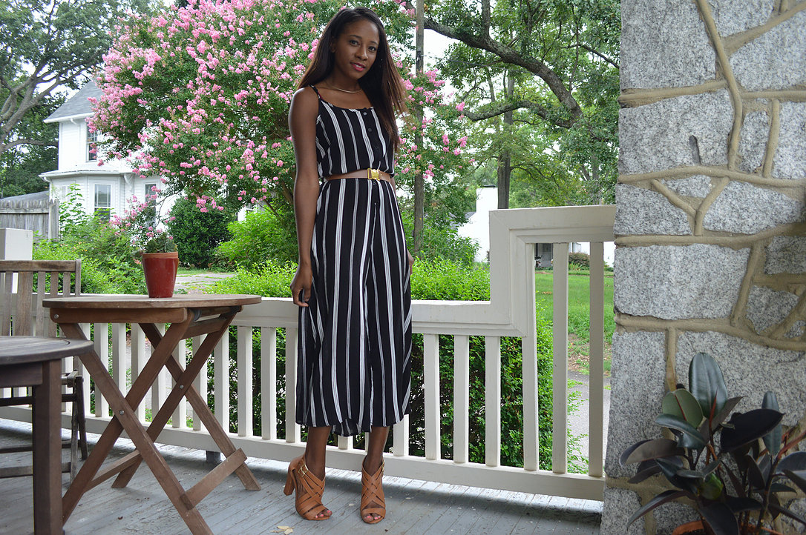

SPRING INTO JUMPSUITS
March 9, 2016
Oh the joys of Spring! there are some many thing I'm looking forward to--- Warm weather, light salads, longer days, and....... ROMPERS. My curent obession are the ones the stop at the calf or right below the knee. The one pictured (above) I purchased from Forever 21 ...
HERE GOES SOMETHING
March 9, 2016
I have litterly been saying I'm going to start a blog for the past 4 years! So this time I'm FOR REAL. You guys have to hold me to it.
I'm not sure people still read blogs anymore- or read for that matter- considering you have social media outlets like Instagram wher...